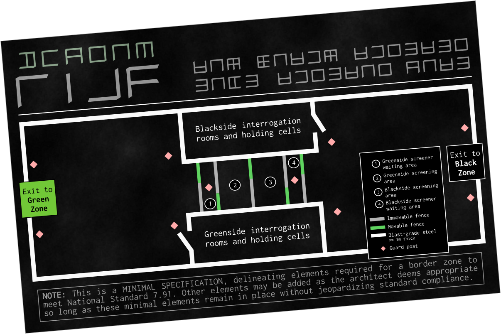

The tram slid to a gentle halt at a Central District stop illuminated by dim safety lamps and two moons hanging just over the horizon. It was almost midnight as Niltar and Livkir stepped out onto the platform, Shalcas scampering along behind them. The cold front had passed and the tropical climate usual to the Temperate Belt had resumed, filling the air with a welcoming warmth.
Not many people were still out at this hour. As they headed up the tree-lined path to the Civic Hall, they passed one or two couples cuddling on benches, watching the moonrise; Niltar clenched her fists and looked away, tears pooling in her eyes.
The warm breeze followed them into the open pavilion where a night clerk sat, reclining in her chair with headphones on and a book propped open in one hand. She sat up as they approached.
“Hey,” she said, glancing back and forth at them. “Sorry, we don’t usually see anyone this late. Is there some kind of emergency?”
“We need to find someone,” Livkir said, as Niltar cringed back. “We don’t know what’s going on, or who took her—”
“Took her?” The clerk shook her head. “Whoa, whoa, whoa. Slow down. Are you saying someone kidnapped your friend?”
“We think it was the Shevran,” Shalcas interjected, stepping forward. “We think they arrested her.”
“The Shevran?” The clerk sat bolt upright. “Shit. Okay. I was not prepared for this tonight— look, can you tell me what happened? More specifically, I mean?”
“They took her out of her dormitory,” said Niltar quietly. “They just barged in like they had a right to be there. They didn’t knock, they didn’t ask, they just — they just walked in and the security locks let them and they handcuffed her and they took her away. And we couldn’t do anything.” She was shaking now, Livkir pulled her close and put his arms around her.
“Um. Okay. That… definitely sounds like a Shevran action, I guess.” The clerk shifted in her seat. “I don’t really know what to tell you. What are you looking for?”
“We want her back,” said Niltar, her voice quavering.
“We want to know what’s going on,” said Livkir calmly, squeezing Niltar’s shoulder. “Our friend was just taken and nobody’s told us anything.”
“Okay.” The clerk nodded. “I can’t promise anything — shit, I don’t even know if the Shevran office is staffed this late — but I’ll call them, okay? At least see what they say?”
Niltar nodded. “Good.”
“Thank you,” said Livkir.
“Yeah, no problem.” The clerk picked up a receiver from her desk and punched a code into the phone. “Hey, this is Civic Hall Dispatch — hey, you are here tonight! Great. Um, I’ve got some kids out here, they’re saying you, um, you arrested a friend of theirs and they want to know what’s— yeah, hold on.” She turned back to Livkir. “What did you say your friend’s name was?”
“Cassil.”
“Gotcha. Cassil Tegvari,” the clerk said into the phone. “Is she— oh. Okay. Yes, yes, ma’am. I’ll tell them. Thanks so much.”
She reseated the handset. “I’ve been told to tell you they’re sending an officer to uh, ‘escort’ you. Not sure what they meant by that. Just have a seat in the pavillion, they’ll be right out.”
Niltar went pale. “They’re going to take us too! You can’t let them—”
“Niltar.” Livkir took her by the shoulders. “I know you’re upset. I’m upset too. But we have to stay calm, okay? We’ve done nothing wrong.”
“Maybe it’s— maybe it’s a coup! Maybe the Shevran is taking over!” Niltar blurted out. “Maybe they’re taking innocent people and running experiments! Liv, we have no idea what we’re getting into, they could be trying to— to make supersoldiers or testing bioweapons or—”
“I can assure you, we’re doing no such thing, comrade,” said a calm, amused voice. “I’m pretty sure I would have been informed.”
Niltar started, covering her mouth to stifle a cry as she staggered backwards, staring at the woman standing behind them. “Who are you?” she demanded. “Where did you come from!?”
The woman was swathed in grey-green robes, with a leather breastplate strapped around her shoulders and a sleek grey sidearm in a bandolier. Instead of civilian wraps, she wore a single black armband with the word “Shevran” picked out in white calligraphic text. She inclined her head. “I’m Commandant Talvas. I’m the Shevran’s head of security in this commune, under Section Head Shalmir. I am sorry if I startled you, and if it offers you any reassurance,” she adds with a smile, “the People are already ‘supersoldiers,’ as you put it. Genetic experimentation is more the purview of the Ranavlin, anyway.”
Livkir straightened quickly and saluted. “Commandant! I’m so sorry about Niltar, she—”
“Appears to be hyperventilating,” said Talvas. “Come. I’m going to take you downstairs to our offices, and get her something for her anxiety.”
“Can I ask what’s going on, ma’am?” asked Livkir, hurrying after her.
“They haven’t given me the details. I can assure you you’re not in any kind of trouble.” She plucked a tablet from her bandolier and glanced at it briefly. “You are Niltar, Livkir, and Shalcas Tegvari, yes?”
“I — yes. Yes, ma’am. We are.”
Talvas rapped her knuckles on a lift door and a control panel lit up, showing several options Livkir had never seen before. Talvas tapped the menu and ushered the three into the lift.
As the door slid shut, the commandant plucked a mobile handset from her bandolier and thumbed the contact. “Talvas to Security,” she said quietly, “on my way down with the visitors. Have a medic on standby, one of them is experiencing a stress reaction, over.”
“Understood, ma’am. Security out.”
“I don’t want you to drug me,” Niltar muttered, wrapping her fists around the lift’s handrail.
“I was just going to get you a shot to help you calm down,” said Talvas reassuringly. “I’m not going to force you to take anything, but I can tell you’re very badly upset and I know this is a very stressful situation.”
“You’re fucking right it’s stressful!” Niltar blurted out. “She’s— Cassil’s my vartash, you understand that? She’s supposed to be my guardian and you just took her away and— if you hurt her—” Niltar slid to the floor, and buried her arm in her sleeve, sobbing.
Talvas crouched down and took Niltar by the shoulder. “I know,” she said gently. “I know this is hard on you. I can’t even imagine how you feel right now. Just take some deep breaths, okay? They wouldn’t be bringing you downstairs if they weren’t going to give you some answers.”
Niltar took a deep, shuddering breath. “I can’t— I can’t stop, I don’t want to cry, I just— I—”
“That’s all I wanted to get you meds for,” said Talvas. “Just a quick exorphine injection to help you calm down.”
“Just, what, fent?” Niltar choked out, staring at the officer’s feet.
“That’s all, yes.”
Niltar looked away. “…alright.”
Talvas stood. “Nothing bad is going to happen to you, I promise. If it was, they’d have sent up an armed detachment and you’d all be in handcuffs by now.”
“So we’re free to leave?” asked Shalcas timidly.
“At any time. Just say the word.”
The lift slowed to a halt, and the doors slid back. Talvas stepped out, and gestured for the three to follow her. Livkir helped Niltar to her feet. Her small body was wracked with sobs.
They were in a cramped antechamber, with another lift on the other side, blocked by a series of metal gates. Talvas approached the security station, and the officer on duty saluted.
“Ma’am. We brought a medic up, like you asked.”
“Bring her through.” Talvas gestured to the woman on the other side of the security grate. An alarm blared briefly, and the grate slid back.
“Commandant, ma’am,” said the medic, hurrying forward. “They told me I was needed to treat a — a stress reaction?”
Talvas nodded, leading her over to the group. “If you could give the girl a fent injection, it would help speed things up a bit.”
“Of course. Not a problem.” The medic fumbled in her toolkit. “I’ll need her consent?”
“Naturally.”
“Her uncoerced consent.” The medic frowned and flicked her wrist at Talvas. “Shoo.”
Talvas smiled politely, stepping back. “As you wish. I’ll wait up ahead.”
“Hi there, how are you doing?” The medic smiled at Niltar. “Is this okay with you?”
Niltar nodded, shaking. “I guess,” she managed.
“Have you been on fent before? You know what to expect?”
“I h-have, yeah.”
“Alright. Just to be clear, you don’t have to do this, the Commandant can’t compel you to take any drugs without custodial authority. This is what you want?”
Niltar nodded.
“All right! Come sit over here.” The medic led her to a bank of chairs by the wall and sat down next to her. “Do you have a panic dysfunction? Abandonment trauma reaction? Was it triggered by something? I haven't been able to review your medical files, I'm afraid.”
Niltar swallowed. “ATR, yeah. Fuck, I— I’ve been doing so well, I haven’t h-h-had an attack in so long—”
“Oh, I’m so sorry. Hold out your arm, please?” The medic swabbed the injection site with an alcohol wipe. “This isn’t your fault, though. You have to understand that. I know it feels like a setback to have an attack like this, but it sounds like you’re getting the symptoms under control. Ceshvol isn't something you just recover from; it's something you learn to manage.” Niltar winced as the needle darted into her vein. The medic held her arm steady for a few seconds, then slid the syringe back out and secured a bandage over the wound. “There we go. The attack should subside in a few seconds, okay?” She patted Niltar’s arm. “How are we doing?”
Niltar swallowed heavily. Her breathing was slowing, and she wiped her tears on her armwrap. “Okay. I’m feeling better. Th—thank you.”
“My pleasure, dear. Can you stand okay? The fentadone might make you a little woozy, it is an exorphine—”
“I know, I know.” Niltar stood slowly. “I’m okay.”
“We’re clear!” called the medic, waving Talvas back over. “Alright, dear. You let them know if you feel the symptoms return? Fentadone is very short-acting, so an injection is just a stopgap to abort the attack. I can get you some extended-release tablets if necessary?”
“I’ll — I’ll pick up a bottle at the dispensary.”
“Sounds like a plan.” The medic turned to Talvas. “She’s calming down, ma’am. Whatever you did to trigger her, kindly don’t do it again? Trauma reactions are serious business, and it can be very damaging to the patient’s morale to experience these relapses.”
“Noted, Mirias.” Talvas gestured at the security gate. “You should return to your station.”
“Yes, ma’am.”
Talvas turned back to Niltar, Livkir, and Shalcas. “You’re going to be entering a Black Zone, so I’m afraid that means full screening, one-by-one. I—”
“I’ll go first,” interrupted Niltar, swaying slightly. “I want to get this over with while my system’s still full of fent.”
Talvas nodded. “I think that’s wise.” She took Niltar by the shoulder and led her to the security gate. “Be gentle with her,” she instructed the guard.
“Yes, ma’am. We’ll do our best.”
Talvas stepped back. “Sending the first visitor through,” she said into her handset. The alarm blared again and the security gate rolled back. Niltar swallowed hard as two heavily armored screening officers approached her and ushered her behind the gate. Another blast from the alarm, and the gate slammed behind her.
“What’s a Black Zone?” murmured Livkir, glancing at Shalcas.
“Oh. You don’t know?” Shalcas blinked. “It’s like — you know everything’s divided into security zones, right? Inside the commune walls is the Green zone, outside is the White Zone—”
Livkir nodded. “I just haven’t heard of Black Zones before.”
“It means total lockdown. Admins know everything and everyone that goes in and out.” Shalcas looked down. “They filtered us through a Black Zone after — before they, um, relocated us.”
“Relocated?” Talvas raised an eyebrow. “You’ve been involved in Shevran actions before, I see.”
Shalcas bit his lip. “I… was a Varshali.”
“Oh.” Talvas took a sharp breath. “I wasn’t involved myself, but — well, we were all briefed. I’m so sorry.”
“Shalcas.” Livkir frowned, and took his hands in his. “You don’t have to come through with us, you know. I don’t know exactly what you went through but — I don’t want to make you relive it, you know?”
Shalcas smiled, blushing faintly. “That’s — that’s really sweet of you, Livkir. No. No, I’m in this with you now. You’re my friends now, right?”
“Yes we are.” Livkir squeezed Shalcas’ hands gently. “So call me Liv.”
Shalcas nodded. “Right. Okay. Yeah. Liv. Um… back in… back when I was young people used to call me Shay sometimes? I mean, nobody has in a long time but—”
“Shay it is.” Livkir punched him gently in the shoulder.
On the other side of the fence, Niltar stood with her arms outstretched as the security officers made a thorough scan for bioaugments. She flinched at the familiar cold touch of a reader plate to the nape of her neck.
“Can you please confirm your name and identification number?”
“Um. N—Niltar Tegvari. W— ward zero-four-ten-twelve-ten-nine-zero.”
“Confirmed.” The officer stepped back. “You will need to disrobe and submit to a visual inspection. Your current clothing will be placed in a locker and it will be returned upon your return to the Green Zone.”
“W—what?” Niltar flushed.
“You’ll be given a set of temporary robes to wear inside the facility. Sorry, kid. Nothing in and out but people.”
“Even we can’t cross over without getting searched,” added another guard. “You know we’re not actually even cleared for that facility?”
“This… this isn't the goddamn showers, I don't know half these people!” Niltar clutched her robes to her body protectively. “You’re really going to make me— make me strip in front of them?”
“If you want to make it through that gate, yeah.”
Niltar shook her head. “Fucking… just glad I’m high for this.”
Hands shaking slightly, she unpinned her robes and let them fall to the floor. She slipped her armwraps off, and stopped.
“Even my bra?”
“Especially your bra,” said the guard. “You know how easy it would be to hide a recorder or a folding knife in there?”
“Don’t give her ideas, Ral,” chided another.
Niltar looked from one to the other for a moment, then grasped the hem and yanked her bra over her head. “Fine!” she snapped, dropping it on the floor. “Good enough?”
“Hairclip too. Everything but your beads.”
“You have got to be fucking kidding me!”
Hair unclipped and completely naked, Niltar had to raise her arms above her head for the guards to look her over. After a brief but thorough search — none of them touched her, but she almost wished they would, like it would feel less humiliating if she didn't have to be a willing participant to this — they collected her clothes, and retreated behind an interstitial security gate. Only then did the gate in front of her finally open. It was like an airlock, she thought, but for secrets instead of air.
A rough voice over the intercom ordered her to step through the gate. It ground shut behind her, and another interstitial opened to allow another set of guards access. They wore different uniforms from the first guards, uniforms more like the one Talvas wore. Again, they made her stand naked, legs apart, arms over her head, to check she wasn’t carrying anything into the Black Zone. Finally, satisfied, they handed her a spartan tan robe, and she quickly wrapped it tight around her body, covering up much more than she usually did.
She was allowed through the final security gate, and stepped past the large floor markings reading “BLACK ZONE — AUTHORIZED PERSONNEL ONLY”. A clerk instructed her to sit and wait for the rest of her group to to come through.
The buzz from the fentadone shot was starting to wear off as Livkir, then Shalcas came through, each swathed in the same tan robe. The same uniform, Niltar realized. What did it mark them as? Civilians? Guests?
Prisoners?
Livkir sat down beside her as Talvas stepped through the gate. “Hey,” he said, putting an arm around her. “You holding up okay?”
“That was violating.”
Shalcas nodded. “That was worse than I rembered.”
Talvas stepped up to the clerk’s window. “Authorize these three for visitor status, on my authority and recognizance.”
“Very good, ma’am.”
Talvas turned back to the three teens. “Follow me, please?”
